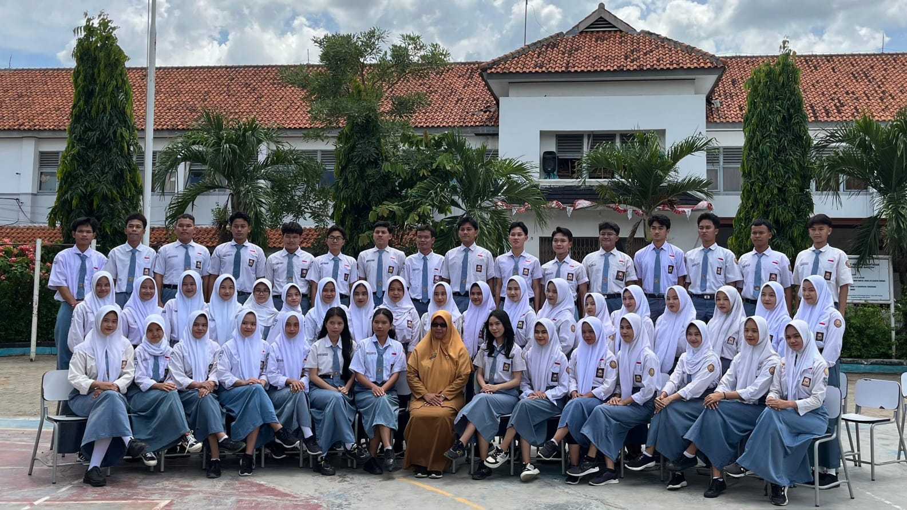

Masa SMA menjadi salah satu perjalanan paling menyenangkan dan penuh kenangan. Saat kelas 10, semuanya terasa baru dan sedikit canggung karena harus beradaptasi dengan lingkungan, guru, dan teman-teman baru. Hari-hari dipenuhi dengan perkenalan, belajar bersama, bercanda di kelas, jajan di kantin, hingga pulang sekolah bersama. Memasuki kelas 11, kebersamaan semakin terasa karena banyak pengalaman seru yang dilalui bersama, seperti goes to campus ke PTN top 10 seperti UGM dan UNDIP yang membuat kami semakin termotivasi mengejar kampus impian. Tidak lupa perjalanan ke Dieng yang memberikan pengalaman indah dengan pemandangan, udara dingin, serta tawa dan cerita yang membuat momen itu sangat berkesan.
Saat kelas 12, suasana mulai berubah menjadi lebih serius karena fokus untuk mengusahakan masuk PTN impian. Hari-hari dipenuhi dengan belajar, try out, bimbingan, ujian praktik, hingga ujian sekolah yang menjadi tantangan besar. Di tengah kesibukan itu, ada momen berharga seperti foto yearbook, foto ijazah, dan malam keakraban bersama satu angkatan yang dipenuhi tawa, cerita, kebahagiaan, sekaligus rasa haru karena menyadari kebersamaan selama tiga tahun akan segera berakhir. Dari kelas 10 hingga kelas 12, masa SMA menjadi perjalanan penuh perjuangan, kebersamaan, pengalaman seru, dan kenangan indah yang akan selalu terkenang.